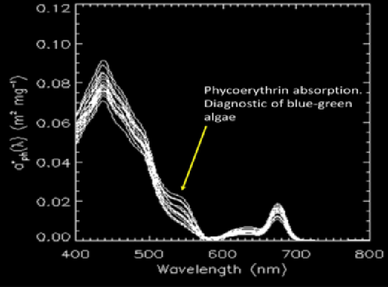

Sanctuaries
Florida Keys Sampling Overview
Starting in 2015, the USF and NOAA’s South Florida Program (SFP), led by the NOAA Atlantic Oceanographic and Meteorological Laboratory (AOML), and Florida Keys National Marine Sanctuary science personnel began conducting bi-monthly MBON sampling at Molasses Reef, Looe Key, and Western Sambo (Figure 1)
Sampling is conducted aboard of the R/V Walton Smith (University of Miami) as part of the SFP, and on small (29 ft.) boats from the FKNMS during months between SFP cruises. More than X samples have been collected on the 13 MBON cruises between April 2015-March 2017. MBON researchers are participating on all of the cruises in 2017.
The observations include physical (temperature, salinity, light, currents), chemical (nutrient) data, chlorophyll-a and High Performance Liquid Chromatography (HPLC) pigment concentrations, environmental DNA (eDNA), bio-optical measurements, and phytoplankton and zooplankton samples for taxonomy and primary productivity. In situ bio-optical measurements include surface remote sensing reflectance (Rrs), chlorophyll-a and colored dissolved organic matter (CDOM) fluorescence, and specific absorption spectra of phytoplankton and detritus.
During the bi-monthly ship cruises we also collect profiles of light intensity. The ship has along-track observations of chlorophyll fluorescence and light attenuation. In addition to the three core MBON stations, we collect observations at 30 other stations, including transects of stations near the Shark River off the Florida Everglades (Figure 4), for HLPC pigments, in situ surface Rrs, and eDNA. HPLC pigments, surface Rrs, and specific absorption measurements will aid in the calibration of satellites, seascapes analyses, and assessment of phytoplankton functional types (PFT) distribution.
Figure 2
Preliminary results show that in situ optics are effective for detecting specific phytoplankton functional types (PFT) in the Florida Keys. Specifically, chlorophyll-specific absorption spectra of phytoplankton (a*phy) from samples collected at the three MBON sites in July 27-31, 2015, indicate high abundance of blue-green algae (very likely Trichodesmium spp.) shown as absorption peaks at 545 nm (Figure 2). Time series of (a*phy) and complementary optical observations therefore serve as a practical tool for studying changes in biodiversity of lower trophic levels in this region and aid in the improvement of satellite ocean color algorithms for detecting shifts in phytoplankton community composition.
Figure 3, shows Chlorophyll-specific phytoplankton absorption (a*phy) spectra of surface and bottom samples from the three MBON sites during July 27-31, 2015. Absorption peaks at 545 nm are indicative of the presence of the pigment phycoerythrin, and therefore of cyanobacteria in the water column.
Figure 1
NOAA South Florida Program research cruises
MBON project
Locations occupied bi-monthly by the NOAA South Florida Program research cruises (green dots) and monthly by the MBON project (red dots). Inset photos (counterclockwise) Bongo net tows (a), surface and bottom water sample collections (b), and surface Rrs measurements (c) are carried during SFP cruises. The SFP cruises also collect a suite of along-track bio-optical parameters and physical measurements including current velocities. FKNMS science staff collect surface and bottom water samples at the MBON stations from small boats using a 5-liter Niskin bottle (d) during months between SFP cruises, and transport samples to FKNMS facilities for processing (e).
Figure 2
Figure 3
Photos provided by provided by Beth Dieveny and Rosemary P. Abbitt, LTJG/NOAA Florida Keys National Marine Sanctuary
Date: April 7, 2016
Eric Raslich and LTJG Rosemary Abbitt collecting water samples (specifically, transferring from bucket to carboy) for the MBON project in the Special Preserve Area (SPA) at Molasses Reef .
Photos provided by provided by Beth Dieveny and Rosemary P. Abbitt, LTJG/NOAA Florida Keys National Marine Sanctuary
Date: November 29, 2015
The Niskin bottle as it is closing – it was just triggered to close as the brass messenger that was sent down the line activated the release. MBON at Molasses Reef SPA.
Photos provided by provided by Beth Dieveny and Rosemary P. Abbitt, LTJG/NOAA Florida Keys National Marine Sanctuary
Date: November 29, 2015
Three curious scrawled filefish (Aluterus scriptus) swimming after the Niskin bottle during MBON sample collection at Molasses Reef SPA.
Photos provided by provided by Beth Dieveny and Rosemary P. Abbitt, LTJG/NOAA Florida Keys National Marine Sanctuary
Date: April 7, 2016
Variety of octocorals and a gray snapper (Lutjanus griseus) at Molasses Reef during MBON sample collection.